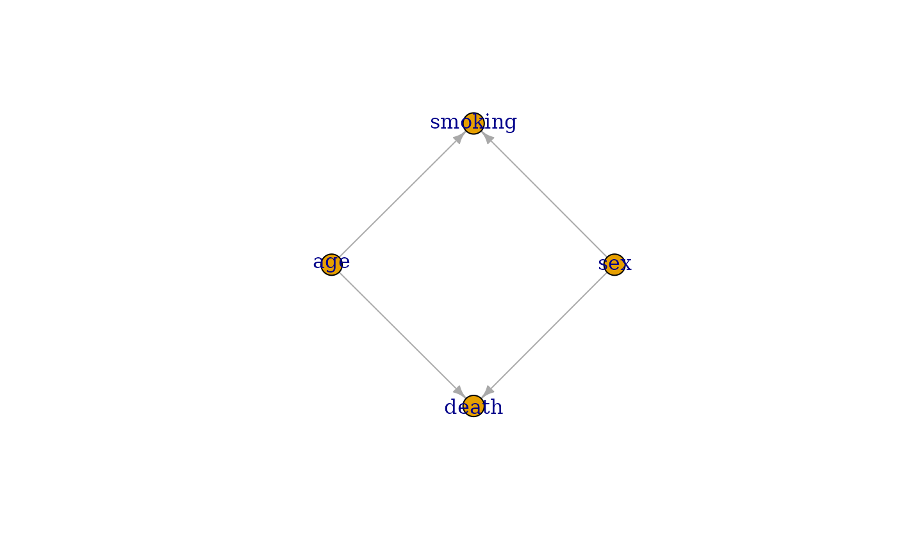

Transform a DAG object into an igraph object
as.igraph.DAG.RdThis function extends the as.igraph function from the igraph package to allow the input of a DAG object. The result is an igraph object that includes only the structure of the DAG, not any specifications. May be useful for plotting purposes.
Usage
# S3 method for class 'DAG'
as.igraph(x, include_root_nodes=TRUE,
include_td_nodes=TRUE, include_networks=FALSE, ...)Arguments
- x
A
DAGobject created using theempty_dagfunction with nodes added to it using the+syntax. See?empty_dagor?nodefor more details. Supports DAGs with time-dependent nodes added using thenode_tdfunction. However, including such DAGs may result in cyclic causal structures, because time is not represented in the output matrix.- include_root_nodes
Whether to include root nodes in the output matrix. Should usually be kept at
TRUE(default).- include_td_nodes
Whether to include time-dependent nodes added to the
dagusing thenode_tdfunction or not. When including these types of nodes, it is possible for the adjacency matrix to contain cycles, e.g. that it is not a classic DAG anymore, due to the matrix not representing the passage of time.- include_networks
Whether to include time-fixed networks added to the
dagusing thenetworkfunction or not. Usually it does not make sense to include those, because they are not classical nodes. This is mostly used internally to ensure that the generation of nodes and networks is processed in the right order.- ...
Currently not used.
Examples
library(simDAG)
# some example DAG
dag <- empty_dag() +
node("death", type="binomial", parents=c("age", "sex"), betas=c(1, 2),
intercept=-10) +
node("age", type="rnorm", mean=10, sd=2) +
node("sex", parents="", type="rbernoulli", p=0.5) +
node("smoking", parents=c("sex", "age"), type="binomial",
betas=c(0.6, 0.2), intercept=-2)
if (requireNamespace("igraph")) {
g <- igraph::as.igraph(dag)
plot(g)
}
